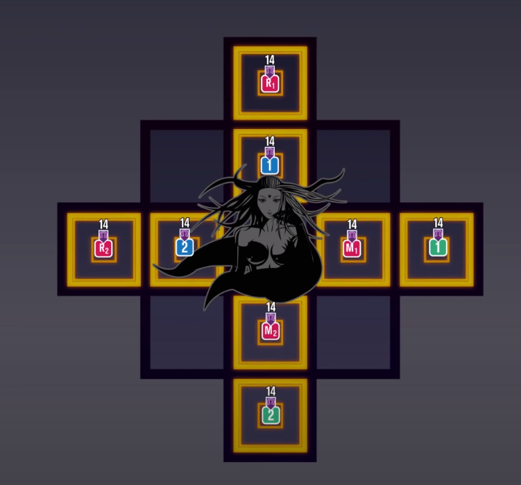
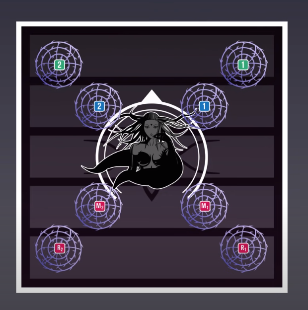

FFXIV Endwalker 6.2 Raid Planning
Scheduling and Goals
20 October 2021
Contents
Present
- Jimmy Joe
- Billy Bob
- Timmy Tom
- Edward Wise
- Ricky Mattingly
- Kimberly Winchell
- Richard Janke
- William Thomas
Agenda
Unfinished concerns
- Job assignments need to be determined
- Someone needs to study raid mechanics ahead of time
Topics
- Additonal Roles
- Person in charge of callouts
- Person in charge of tracking DPS
- Scheduling
- Gear Distribution
- Strategy for Turn 1
Minutes
- Jobs
- Jimmy Joe - Dark Knight
- Billy Bob - Gunbreaker
- Edward Wise - Astrologian
- Kimberly Winchell - White Mage
- Ricky Mattingly - Dragoon
- Richard Janke - Ninja
- William Thomas - Black Mage
- Timmy Tom - Summoner
- Billy Bob will study the boss mechanics at least 2 days before starting the fight
- Billy Bob will be leading callouts during the fights
- The group will meet every Tuesday and Saturday at 18:00 PST. Sessions will last for at least 2 hours unless otherwise determined beforehand.
- DPS will be receiving gear drops first for each turn.
Tanks will get their gear after DPS are fully equipped for the turn.
Healers will get their gear after Tanks are fully equipped for the turn. - We will be using Joonbob's strategies for turn 1: Tiles, Brambles


Additional Notes
Timmy Tom offers to substitute as a Scholar if needed.
The following clip contains the recording of the meeting: